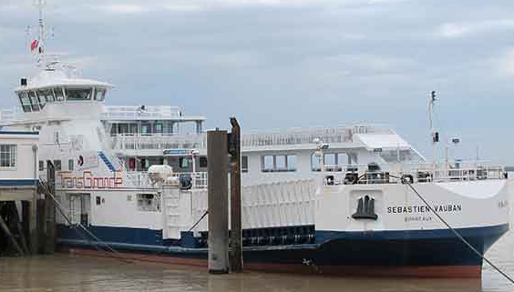
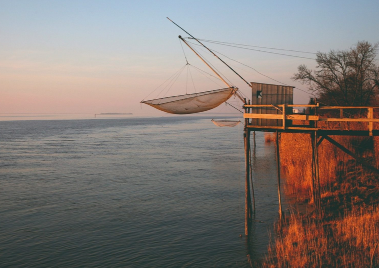

Croisière sur l'Estuaire
L’estuaire de la Gironde est le mieux préservé et le plus grand d’Europe occidentale avec ses 635 km2 et 12 kilomètres de large.
Le bac de Blaye fait des liaisons régulières depuis Lamarque dans le Médoc, la traversée dure environ 30 minutes.
Il y a une douzaine d’îles sur l’estuaire mais seules 3 sont visitables, les autres étant préservées et constituant des réserves naturelles pour la faune et la flore.
Depuis Blaye de nombreuses croisières sont proposées pour visiter les principales îles du fleuve : l’île de Patiras, l’île Margaux et l’île Nouvelle.
L’île de Patiras, en face de Pauillac et des grands crus du Médoc, a une histoire particulière pour la viticulture puisqu’elle a résisté au phylloxéra et conserve des vignes encore aujourd’hui. Au milieu de cet écrin de verdure, vous pourrez visiter le phare de l’île, et déjeuner au “Refuge”, restaurant à la cuisine soignée et dont l’architecture moderne a été totalement intégrée à son environnement.
L’île Margaux, privée, est entretenue par son propriétaire qui y a établi son propre château et a planté vignes et arbres fruitiers sur l’île transformant cette île en petit paradis.
L’île Nouvelle fait face à la citadelle de Blaye. Elle n’est plus habitée depuis le milieu du siècle dernier. C’est maintenant une réserve ornithologique naturelle dont les parcours de randonnée et animations régulières permettent d’observer de nombreux oiseaux des milieux aquatiques (Hérons, Cygnes, Aigrettes,…).

La route de la Corniche fleurie
La route de la Corniche Fleurie, ou anciennement Route des Capitaines peut être empruntée depuis Blaye pour rejoindre Bourg.
Cette route pittoresque, qui longe la Dordogne, traverse de superbes villages jusqu’au Bec d’Ambès, estuaire où la Dordogne et la Garonne se rejoignent et forment ensemble la Gironde.
Le long de la route, vous pourrez observer les “cabanes à carrelets”, installations mythiques dont le nom est tiré du filet de pêche traditionnel de la Dordogne et encore utilisé aujourd’hui. Entre Bourg et Gauriac, vous apercevrez des maisons troglodytes installées dans la falaise.
Ces maisons ont été construites par les ouvriers qui travaillaient à extraire la pierre du Canton de Bourg (utilisée notamment pour bâtir Bordeaux) et sont encore habitées pour certaines.
En saison, de magnifiques jardins tropicaux s’épanouissent sous ce micro-climat d’où le nom de « Corniche Fleurie ».

{kind=link}
{kind=link}
{kind=link}
{kind=link}
{kind=link}
{kind=link}